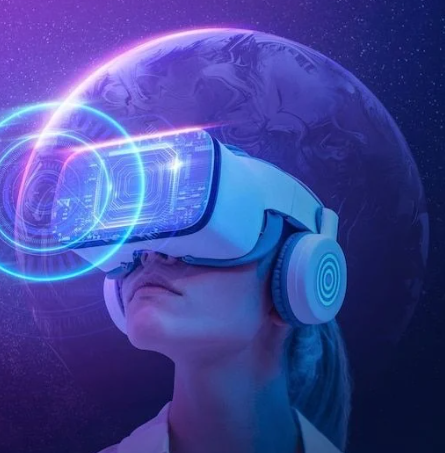
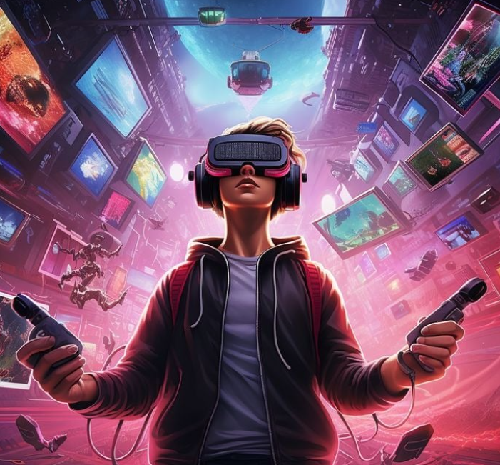

TENDENCIAS TECNOLOGÍAS 3: REALIDAD VIRTUAL Y REALIDAD AUMENTADA
SESIÓN 25 (11-05-2024)

La Realidad Virtual (VR) es una tecnología que permite a los usuarios sumergirse
completamente en entornos digitales generados por computadora. Utilizando dispositivos como
gafas VR y auriculares, los usuarios pueden experimentar y explorar mundos virtuales de manera
inmersiva. Esta tecnología ha encontrado aplicaciones en una amplia gama de campos, incluyendo:
- Entretenimiento: La VR ha revolucionado los videojuegos y la experiencia de entretenimiento. Permite a los usuarios no solo jugar juegos en 3D, sino también vivir experiencias interactivas donde pueden explorar entornos virtuales como si estuvieran físicamente presentes en ellos.
- Educación: En el ámbito educativo, la VR proporciona herramientas poderosas para la enseñanza y el aprendizaje. Permite a los estudiantes explorar lugares históricos, practicar habilidades médicas en simulaciones realistas, o experimentar conceptos abstractos de una manera visual y tangible.
- Medicina: En medicina, la VR se utiliza para la formación de médicos mediante simulaciones quirúrgicas, terapia de exposición para tratar fobias, y rehabilitación física y cognitiva.
- Arquitectura y diseño: Los arquitectos y diseñadores utilizan la VR para visualizar y modificar diseños de edificios y productos en entornos tridimensionales, permitiendo una mejor comprensión y colaboración durante el proceso de diseño.
- Turismo y exploración: La VR permite a las personas explorar destinos turísticos y lugares remotos desde la comodidad de su hogar, proporcionando experiencias inmersivas y educativas.
SESIÓN 26 (12-05-2024)
 Las tendencias actuales en la Realidad Virtual (VR) están impulsando mejoras significativas en varios aspectos clave para proporcionar experiencias más inmersivas y accesibles:
- Mejora de la Calidad Visual y Sensorial: Resolución y Tasa de Refresco: Las nuevas generaciones de dispositivos VR están aumentando la resolución de las pantallas para ofrecer imágenes más nítidas y detalladas. Además, están mejorando la tasa de refresco para asegurar movimientos más suaves y reducir la sensación de mareo.
- Audio Espacial: La implementación de audio 3D es fundamental para mejorar la experiencia auditiva en entornos virtuales. Esto permite a los usuarios percibir de manera más realista la dirección y la distancia de los sonidos, aumentando así la sensación de inmersión.
- Hardware Más Accesible y Portátil: Dispositivos Autónomos: Auriculares VR como el Oculus Quest 2 están ganando popularidad porque no requieren estar conectados a una PC o consola. Esto los hace más convenientes y accesibles para un uso más amplio.
- Reducción de Costos: A medida que la tecnología avanza y se populariza, los dispositivos VR están volviéndose más asequibles. La competencia en el mercado está contribuyendo a la reducción de precios, haciendo que la VR sea más accesible para consumidores y empresas por igual.